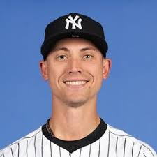
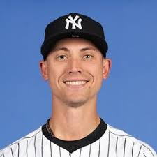

Aaron Judge
Position: Outfielder
Hometown: Linden, California
College: Fresno State
Contract: 9 years, $360 million
Years with Yankees: 8
Years in MLB: 8
Current Stats: .282 AVG, 37 HR, 91 RBI
Giancarlo Stanton
Position: Designated Hitter / Outfielder
Hometown: Panorama City, California
College: N/A (High School: Notre Dame HS)
Contract: 13 years, $325 million
Years with Yankees: 6
Years in MLB: 14
Current Stats: .245 AVG, 28 HR, 72 RBI
Max Fried
Position: Pitcher
Hometown: Santa Monica, California
College: Harvard-Westlake School (no college)
Contract: 6 years, $105 million (2025–2030)
Years with Yankees: 1
Years in MLB: 8
Current Stats: 12-6, 3.22 ERA, 178 K
Ben Rice
Position: Catcher
Hometown: Cohasset, Massachusetts
College: Dartmouth College
Contract: Minor League Promotion (2025)
Years with Yankees: Rookie
Years in MLB: 1
Current Stats: .256 AVG, 6 HR, 21 RBI
Luke Weaver
Position: Relief Pitcher
Hometown: Deland, Florida
College: Florida State University
Contract: 1 year, $2 million (2025)
Years with Yankees: 1
Years in MLB: 9
Current Stats: 3-2, 4.01 ERA, 58 K
Gerrit Cole
Position: Ace Pitcher
Hometown: Newport Beach, California
College: UCLA
Contract: 9 years, $324 million (2020–2028)
Years with Yankees: 5
Years in MLB: 10
Current Stats: 15-4, 2.63 ERA, 243 K

 
